Oscar Pratola
Oscar PratolaPropulsion Projects
Preliminary design and analysis projects spanning liquid rocket engines, airbreathing propulsion, and launch vehicle aerodynamics.
Preliminary Design of a Bipropellant Semi-Cryogenic Blowdown Liquid Rocket Engine
Download report (PDF)A 1000 N LOX/RP-1 liquid rocket engine using a gas-pressurized blowdown architecture, in which propellant delivery pressure decays over the burn. The propellant tanks and feed line, shown below, deliver both propellants to the combustion chamber through a series of valves and filters.
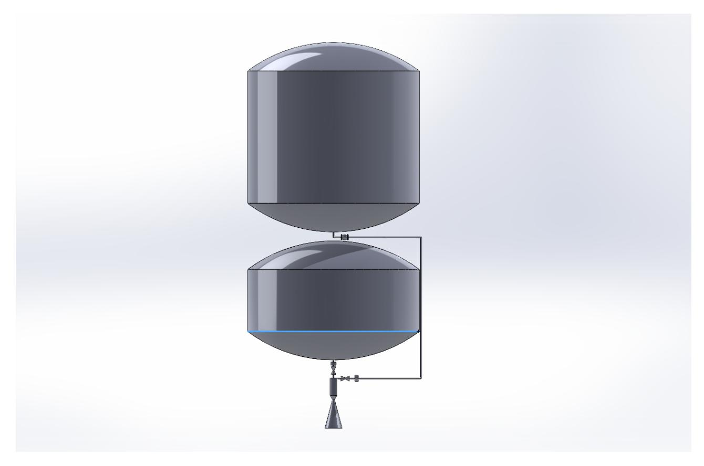
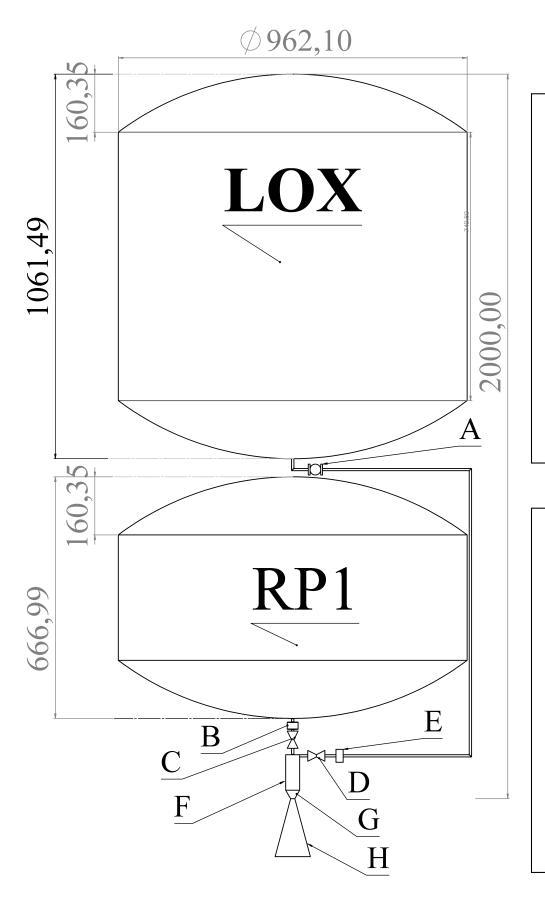
A: Positive Shut-Off Valve · B: Filter · C: Latch Valve · D: Ball Valve for Cryogenic Applications · E: Filter · F: Combustion Chamber · G: Convergent Duct · H: Divergent Nozzle
The study focused on quantifying the performance degradation inherent to the blowdown architecture: as tank pressure decays over the burn, propellant mass flow rate falls with it. Continuous non-linear transient fluid-dynamic sizing (MATLAB) modeled this decay for both propellants, benchmarked against nominal and experimental feature bounds.
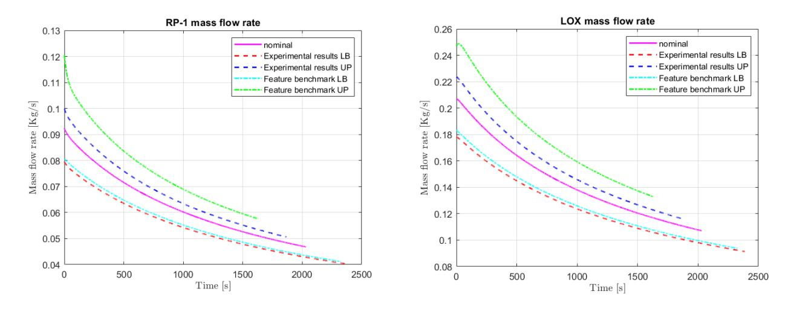
The additively manufactured thrust chamber also introduces geometric uncertainty at the injector level; cylindricity measurements on printed hole and pin components were compared against predicted and observed tolerances.
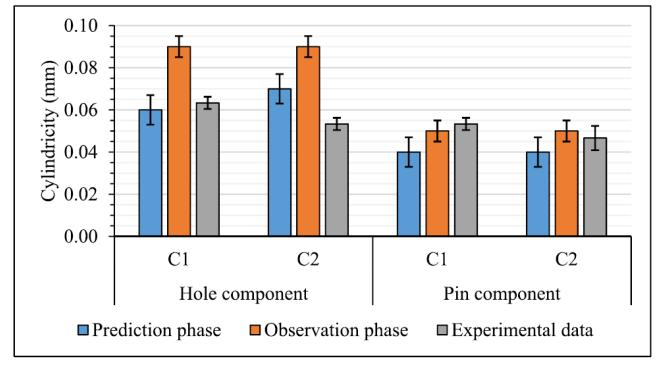
A-10 Thunderbolt II Propulsion Analysis
Download report (PDF)A numerical modeling suite (MATLAB) simulating the baseline Joule-Brayton cycle of the TF34-GE-100 high-bypass turbofan engine that powers the A-10 Thunderbolt II through its typical close air support mission profile.
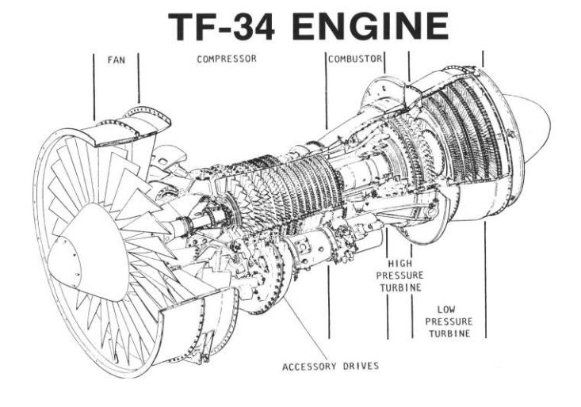
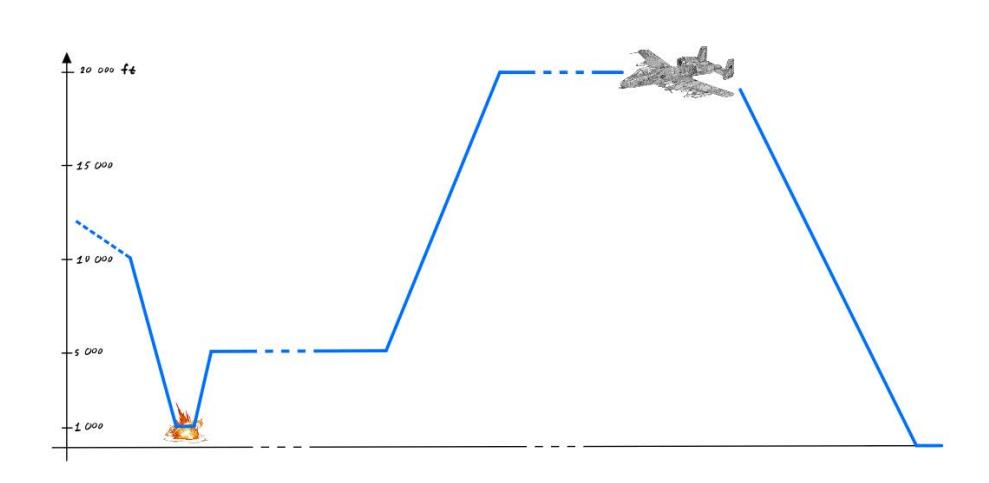
The analysis optimized the compressor pressure ratio and validated velocity triangles against aerodynamic stall boundaries. Increasing the compressor pressure ratio from the baseline βc = 14 to an optimized βc = 20.9 shifted the thermodynamic cycle to higher peak temperatures and pressures, improving cycle efficiency.
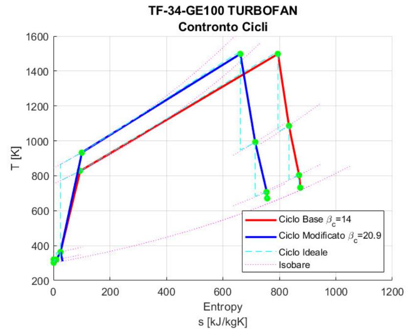
The optimum bypass ratio (BPR ≈ 6.2) was chosen as the point where thrust specific fuel consumption flattens out, balancing thrust against fuel economy.
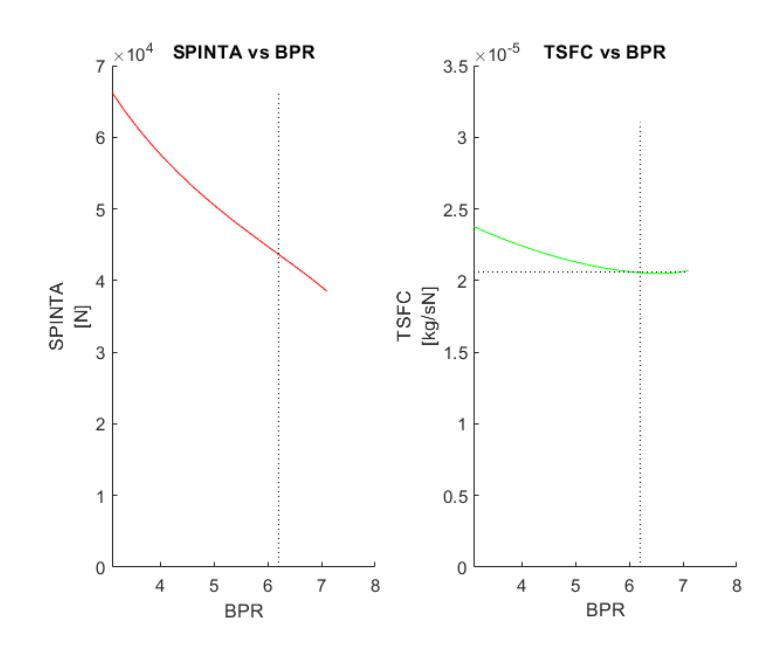
Preliminary Design of an Intercontinental Civil Vehicle for Rapid Payload Delivery
Download report (PDF)Conceptual scaling and trajectory optimization of a sub-orbital solid rocket motor launcher (Orion 50XL / STAR 37FM / STAR 30BP configuration) designed to deliver a 100 kg cargo payload across intercontinental range.
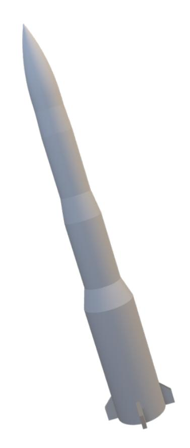
Requirements were structured with a House of Quality (QFD) analysis, benchmarking the design against existing systems on acceleration, payload capacity, range flexibility, and other competing criteria — reflecting the systems-engineering side of a six-month, ten-person project.
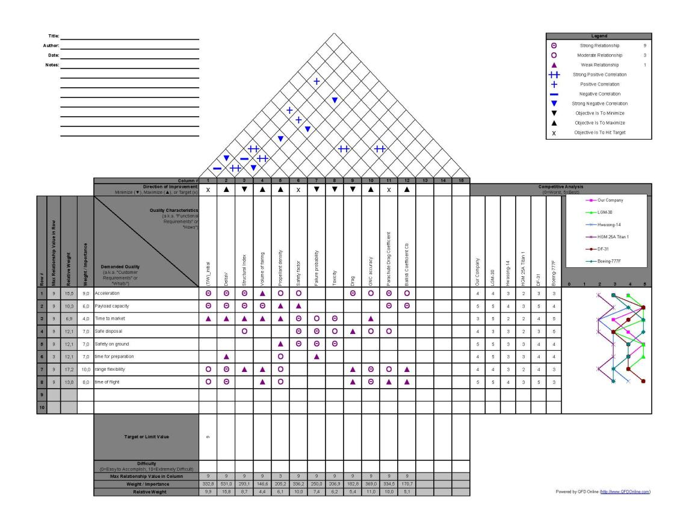
Hypersonic aerodynamic characterization used Modified Newtonian Flow Theory and ANSYS Fluent CFD on a mesh of the full vehicle to map surface force distributions through max-q and beyond.
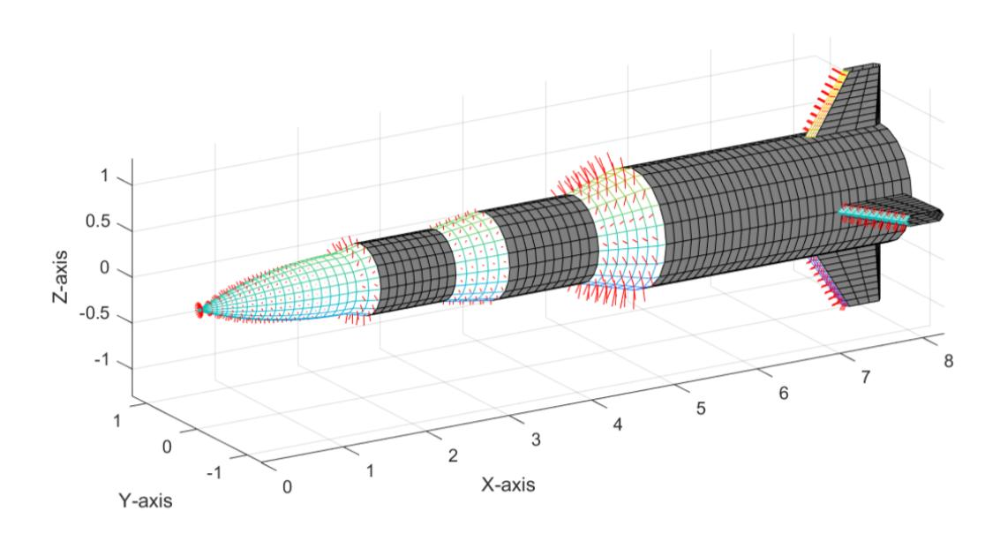
Locally, the nose cone experiences the most extreme aerothermal environment, reaching Mach 20 at 20 km altitude during ascent.
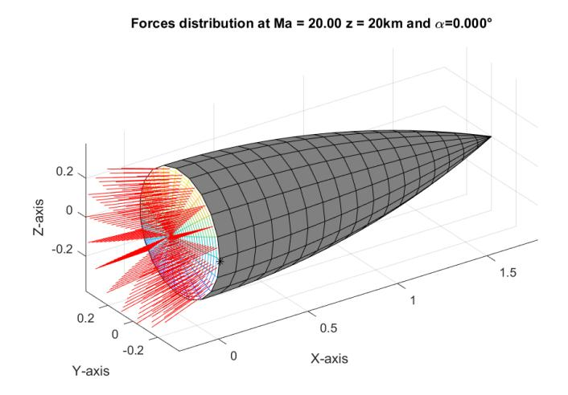
Static stability was verified by tracking the center of pressure against the center of gravity as propellant burns off and stages separate, while drag coefficient was broken down by stage across the Mach range.
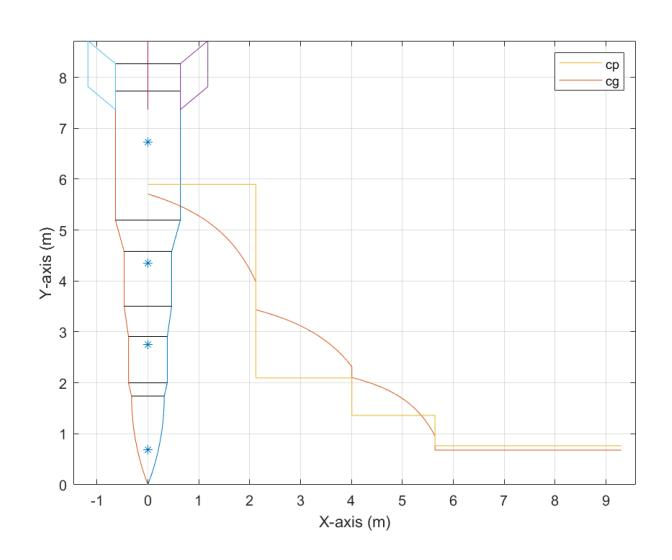
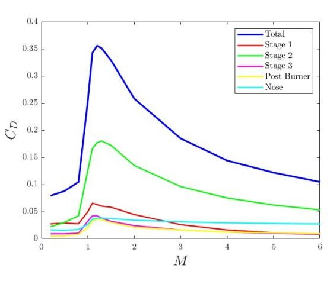
The resulting trajectory reaches an apogee near 1,900 km over a ~9,000 km downrange distance.
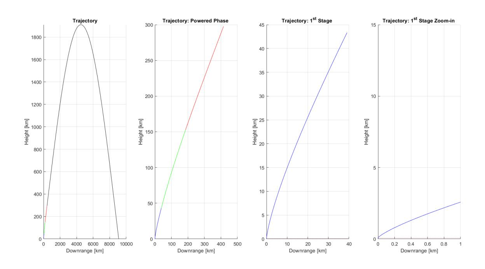
Dynamic pressure and re-entry heat flux constraints, peaking early in the powered phase, shaped the first-stage burn profile and payload capsule design.
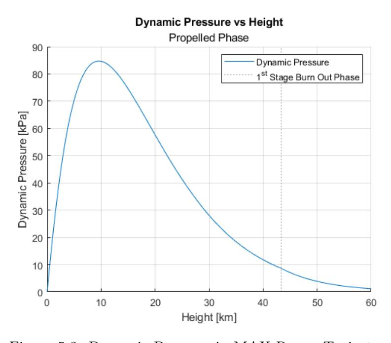